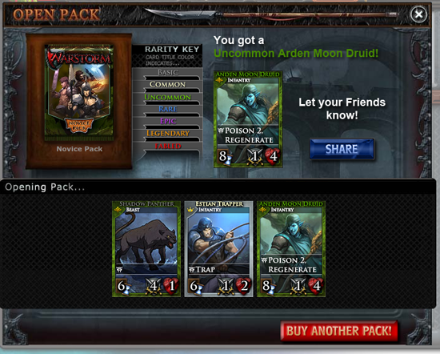

In-Game Marketing Mocks for Zynga Card Game Warstorm
Initiative 1: To find an effective method of driving more sales and increasing click-through for Warstorm Game Card Packets
Method: A/B test marketing campaigns of regular race centered packs with card specific card packs.- Regular race centered packs are the packs that already exist in the Warstorm store
- Card specific packs will highlight a card, and entice people to buy the packet to get a chance to attain the Fabled version of that card (the pack has a higher-than-normal rate to attain the highlighted that card, set % chance to attain the various rarity level of that card + random cards to be a pack of 6)
Initiative 2: To increase effectiveness of viral channels (via sharing).
Method: Mimic real-world word of mouth viral marketing by prompting a "You just got [rarest card in that one opening]. Let your friends know!" window every time a packet is open. In all card games, players usually take a lot of pride in their decks and the specific cards they acquire.